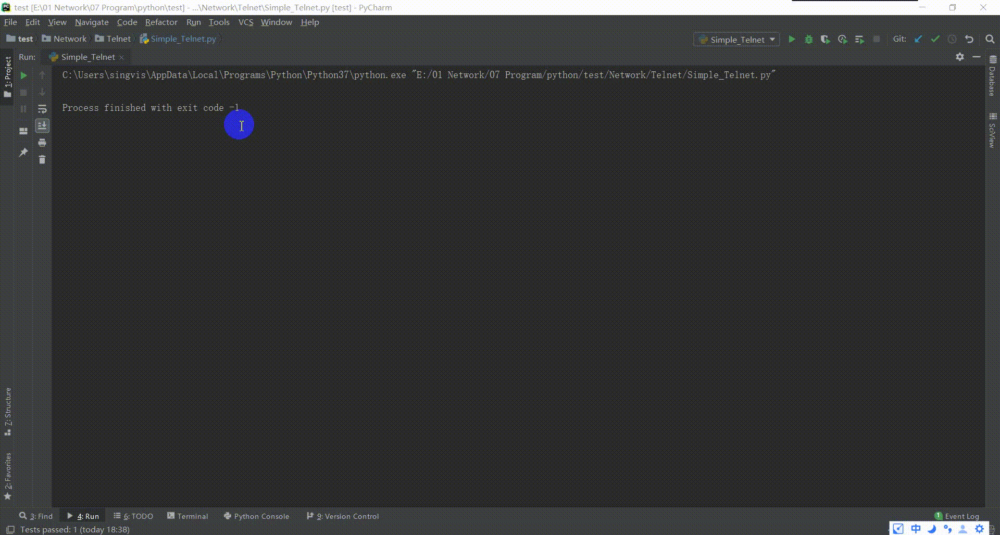
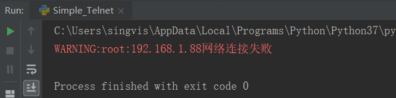
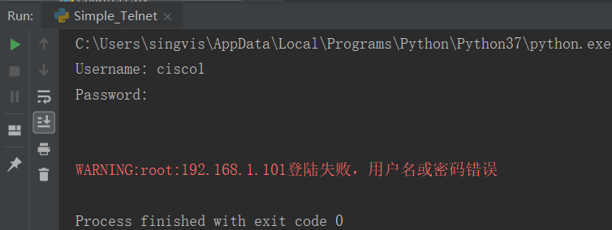

原文出处:本文由博客园博主Singvis提供。
原文连接:https://www.cnblogs.com/singvis/p/11604395.html
原文连接:https://www.cnblogs.com/singvis/p/11604395.html
0.前言
Telnet协议属于TCP/IP协议族里的一种，对于我们这些网络攻城狮来说，再熟悉不过了，常用于远程登陆到网络设备进行操作，但是，它的缺陷太明显了，就是不安全，信息明文传送，极容易被攻击窃取信息，不推荐使用，但本节我还是先从它入手哈。
1. 测试环境及关键代码解释
1.1 简单测试环境
- 使用python3环境
- 使用内置telnetlib模块
- 简单的实验环境
说明：
cmd.txt文件里面命令如下：
terminal length 0
show clock
show ip interface brief
list.txt文件里面的IP如下：
192.168.1.101
192.168.1.102
192.168.1.1031.2 关键代码
import xx：导入模块
class xx：定义类
def xx: 定义函数
try-except ：处理可能引发的异常
tn.read_until(expected, timeout=None)：等待预期字符串或等待超时
tn.write(buffer)：写入的字符串（意思发送给命令给设备）
tn.expect(list, timeout=None)：读显，list采用正则表达式（意思把执行过程显示出来）
tn.read_very_eager()：读显（意思把执行过程显示出来）
tn.open(host, port=0[, timeout])：连接主机
tn.close()：关闭连接
Tips：终端与网络设备交付的信息是以byte类型，所以要把终端上的字符串encode编码转换为byte对象,网络设备回显的byte信息要decode解码。
2. 完整代码
'''
欢迎关注微信公众号：'diandijishu'
此平台是网路工程师个人日常技术、项目案例经验分享，
为巩固及提升技术能力乃至共享所学所知技术
也欢迎各位工程师一起分享、一起成长。
'''
#!/usr/bin/env python
#coding:utf-8
'导入模块'
from telnetlib import Telnet
import time
import logging
'定义类'
class TelnetClient():
'初始化属性'
def __init__(self):
self.tn = Telnet()
'定义login_host函数，用于登陆设备'
def login_host(self,ip,username,password,enable=None,verbose=True):
'连接设备，try-except结构'
try:
self.tn.open(ip,port=23)
except:
logging.warning('%s网络连接失败' %ip)
return False
'输入用户名'
self.tn.read_until(b'Username:', timeout=1)
self.tn.write(b'\n')
self.tn.write(username.encode() + b'\n')
rely = self.tn.expect([], timeout=1)[2].decode().strip() #读显
if verbose:
print(rely)
'输入用户密码'
self.tn.read_until(b'Password:', timeout=1)
self.tn.write(password.encode() + b'\n')
rely = self.tn.expect([], timeout=1)[2].decode().strip()
if verbose:
print(rely)
'进去特权模式'
if enable is not None:
self.tn.write(b'enable\n')
self.tn.write(enable.encode() + b'\n')
if verbose:
rely = self.tn.expect([], timeout=1)[2].decode().strip()
print(rely)
time.sleep(1)
rely = self.tn.read_very_eager().decode()
if 'Login invalid' not in rely:
logging.warning('%s登陆成功' % ip)
return True
else:
logging.warning('%s登陆失败，用户名或密码错误' % ip)
return False
'定义do_cmd函数,用于执行命令'
def do_cmd(self,cmds):
'读取文件，for语句循环执行命令'
with open(cmds) as cmd_obj:
for cmd in cmd_obj:
self.tn.write(cmd.encode().strip() + b'\n')
time.sleep(2)
rely = self.tn.read_very_eager().decode()
logging.warning('命令执行结果:\n %s' %rely)
'定义logout_host函数，关闭程序'
def logout_host(self):
self.tn.close()
if __name__ == '__main__':
username = 'cisco' #用户名
password = 'cisco' #密码
enable = 'cisco' #特权密码
lists = 'list.txt' #存放IP地址文件，相对路径
cmds = 'cmd.txt' #存放执行命令文件，相对路径
telnet_client = TelnetClient()
'读取文件，for语句循环登陆IP'
with open(lists,'rt') as list_obj:
for ip in list_obj:
'如果登录结果为True，则执行命令，然后退出'
if telnet_client.login_host(ip.strip(),username,password,enable):
telnet_client.do_cmd(cmds)
telnet_client.logout_host()
time.sleep(2)
3. 运行效果

备注：这个运行的效果我只存放了192.168.1.101这个IP，精简一下，为了效果。
4. 报错效果
4.1 远程连接不上

4.2 用户名和密码错误

5. 碎碎语
这些只是一些简单的代码，待优化的地方还是很多，先给小伙伴们学习一下，telnet协议是个不安全的，基本网络环境很少用了，ssh为常用的协议，安全又好用，下个文章我给大家介绍python如何使用ssh模块哈。
本人代码功夫不深，如有缺陷望指教，多谢。
如果喜欢的我的文章，欢迎关注我的公众号：点滴技术，扫码关注，不定期分享